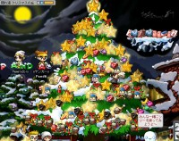
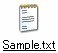
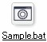

いきあたりばったりです、どうもTEVAです。
もうすぐ2005年が終わっちゃいますね。
振り返ってみれば、、、無計画な一年だったなーと。
惰性で生きてれば後になってしわ寄せが来るのは当然の結果なわけで。
来年こそは計画的に生きるぞー！っとゆー抱負で新年を迎えたいと思います。
さてさて、なんか最近はパソコンに触れるのもままならないほど忙しかったわけですが、
惰性で生きてて後になってしわ寄せｇ(ry
えーっと
ここ二・三日の事でも。(惰性
28日にメイポに行ってきました。
そしたらスナ付近、はくあ、シャオさん、ロロト、オルレアードさん、サシャなど。
久しぶりに会えた人たちが沢山いました(*´▽`)
一日中エルナスベンチに座りっぱなしで大変楽しい時を過ごしました。

貴方達、愛していますよ。うぇうぇ
次。
29日にシャオさんとさちょことで、忘年会してきました。
っつっても、シャオさんお勧めだった居酒屋は満席だったので天下一品とゆーラーメン屋になってしまったわけですが、
よく考えたら俺以外のお二人はそんなに飲める人じゃなく、
ラーメンでも食べながら一杯のビールやチューハイでも十分だったのです。
しかーし
みんな腹減ってるし、俺もラーメン食べたかったしで、そっちの方が丁度よかったわけです。
大変こゆいお話とかして、すんげー面白かったです。
で、食べ終わったらカラオケなんか行っちゃって、Dir en greyとかむちゃくちゃな歌を歌ったり、
シャオさんの美声(ダンディズム)に惚れ惚れしたり、さちょと恋のマイヤヒー歌ったり（ぉ と。
充実した一日を過ごしましたっと。
もうあれです。シャオさんと会うのはOFF会でもなんでもないです。
本当のお友達としてお付き合いさせていただいてます(*ﾟ∀ﾟ)=3ﾑﾊｰ
あー幸せ。
シャオさん、わざわざ俺やさちょの家まで送ってくれてありがとーねぇ(´･ω･`)
またよろしｋ(制裁
で、最後。
わたくしTEVAとさちょは、実はメイポが初めてのネトゲーじゃなく、
EXLoveというのが初ネトゲだったのです。
それは、狩りやレベルという概念はありませんが、海で泳いだり相手を祝福したりと、様々な技が存在します。
それは主にチャットをメインとしたコミュニケーションゲームです。
そこで俺とさちょはチャットの楽しさやネットマナーとかを知り、人付き合いの大切さを学んだのであります。
途中からメイプルストーリーの存在を知って、ちょっとやってみようかなってぐらいのノリではじめたんですが、見事にハマリ、現在に至るわけです。
でも楽しい時間はいつまでも続く事は無く、2005年12月31日を持ちまして運営を終了されてしまいます。
なので最後を惜しむ為に昨晩ログインして堪能して参りました。
もう当時の知り合いには会えないだろうなー…って思っていたんですが、なんと！会っちゃいました！！
くれちゃんに！(ちゃんはいらん)
あーここでも幸せ(*´▽`)
I love EXですよ。あいらぶ。
こんな事して遊んできましたｗ
TEVA＝くろこげ です(´σд`)
まーこれはまたゆっくり書くとして、
2005年の日記はこれでおしまいです。
1月1日から、俺は一週間ほどスキー旅行に行ってきます。
まあボードだけどね。
だからしばらく更新停止したいと思いますヽ(´･ω･`)ﾉ
お土産話とかするから、許してちょーだいね(何
あー…、指と足がまだ痛むんだが、、、ちゃんと出来るんだろうか？('`)
すんげー不安だ、、、○|￣|＿
帰って来てなんの変化も無いPandA日記とか足跡BBSとかPandA日記とかだったりすると素で寂しいのでなんか書いてってくださいね(´･ω･`)
俺は意外なことに寂しがりやってことが判明していますので(何
にぎわっていたりするとTEVAは大変喜びます。
…なんてね。言ってみただけですよ。言ってみただけ(ﾉд`)
とか言いながらPandA日記に着手していない馬鹿管理人の俺('A`)
いや、ほんとすいません。
許してください
ま、いーや。また来年考えよーっとヽ(ﾟ∀｡)ﾉ
さっそく無計画かコラ(天の声
それでは皆さん、よいお年を〜
ﾉｼ
ふー今日はすごくクリスマスな事をしてきました。
神戸行ってきましたよ神戸。
なんの脈絡も無く（ぇ
目指すは六甲山。
山頂に牧場があるらしくて、「そこでチーズとか牛乳飲みたーい( ﾟ,ﾛﾟ)・;'.、」
というさちょの 欲望 要望を満たすためってのが一応の目的でしたので
またまた地図も持たずに勘で突き進みました。いいのか？こんなんで、、、
結局神戸市内に入ってから迷いまくったわけですがね、なんとか辿り着けて1000万ドルの夜景とやらを見てきました。
写真はまださちょから貰ってないのでまだ公開出来ないのですがオルゴール館行ったり夜景を見ながらのディナーとか(省略
ヤハハ(･∀･)
ろまんてーっく な一日でしたっと。
ｵﾜﾘ
…じゃなかった。追伸があります。
ギルドメンバー日記が完成しました。
一応公開はしますが、
パスワードとかは直接言わないといけないので、明日とかにでもメイポ内で告げまーす(･∀･)ﾉ
以上
メリークリスマスお前達(挨拶)
っつーわけで遂にやってきました12月24日。
俺とさちょは今頃ロマンティックな雰囲気を醸し出しながら楽しく過ごしているんだろうなぁ＾−＾
…とお思いのあなた！
ふふふ…
そんな事は無いですよ。
いたってふつーーの休日と相成りました('A`)
あぁん。もどかしい(´Д`)
メイポ。
やっと出来ましたねークリスマスマップ。随分久しぶりだわ
今まで溜めに溜め込んできたビッグスターがようやく役目を果たせるってなもんよ！
なんてったって450個持ってますからね。
 わーいわーいヽ(ﾟ▽ﾟ)ﾉ♪
ちかちか光って…目に悪かったです。
これ、TEVAが属するギルド「PandA」ののシンボルにしようかしらん(*´д`)
んー、いまいちかしら(´σд`)
おまけ(色々な愛の形)
卒業論文終了！
お疲れ様でした！俺。
あーーーーーーー〜〜〜〜…めんどくさかった(;´Д`)
長いことかかったなぁ
ってゆーか時間かかりすぎだなぁ（ぇ
よっしゃ、メイポ復帰じゃーヽ(ﾟ∀ﾟ)ﾉ
チャットするぞー狩りするぞークエストやるぞー泳ぐぞー(何 そしてジャドバラアックス欲しいぞー(違
痛いよー
脱臼した左中指と薬指が痛いよー
横方向の力が加わるとコキャッ☆っという軽やかな音と共に激痛。
右足でのふんばりが効かないからバランス悪いです。
階段降りるのも一苦労。
痛いよー
健康ってありがたい。
さちょはSでした。 どうもTEVAです。
まーなんか色々あったんでなんか書いておこうかなってことで、最近の出来事をば。
なんやかんやで卒業論文、一息つきました。
あとは論文抄録ってゆー、一冊の本にするための研究のまとめを書いて終わりです。
卒業できるかどうかまだ確定じゃないんですけどね('`)
ともかく、皆様にはこんな俺なんかのために色々心配をかけていただいて。
ほんとうにありがとうございました；；
どんだけ恩を受けて生きているんだ俺は。ってゆーかどうやって返していこうかこの恩。
みんな大好きです。
卒論を仕上げなけりゃあならんかったので、自主的にメイポ断ちをしてたわけですが、実は一方でさちょ断ちもしていました。
で、まー、あのー昨日一ヵ月半ぶりぐらいに会ったんですけどね、ねぇ。
あいつSですよ。S。
見かけのしょんぼりさに騙されちゃあいかんよみんな。
まあ俺は、色々責められて快感だったんですけどね。（なんだと
僕はMです。うぇうぇ
山奥の温泉に行ったんですよ。たかすみ温泉。(知らん
雪がすっごくてねー、なんの雪山装備もしていない車ではすごく不安だったんですがまーなんとか無事に帰れました。
いや、ちゃうねん。言いたいのはそこじゃなくて。
うちに帰ってからも寒かったのでお風呂入りなおしたのね。
で、久々にメイポにも行って、あゆちゅんの姉御見学とかしてすげー楽しんだんですがっがが。
トイレ行った時、階段から落ちましてねぇ。
ががががーーーー
って。
トイレへの通路を通ってると思い込んで大きな一歩を踏み出したんですけど、そこは空中だったわけで。
二階から一階まで垂直落下ですよ。
電気も点けずに勘で歩いてたからそうなったんですね。
もう一瞬何が起こったか全然わからない。
壁だと思って触ったところがすり抜けてさー
「え？あれ！？うわ、うわあーぉおああがああああでっでで！！」
家族全員叩き起こすぐらいの大騒ぎ。
左手の薬指とかあさっての方向向いてたし
まー大惨事にはならなかったのでよかったです。
軽い打ち身と擦り傷で済みました。
今から接骨医院行ってきます。
普段パソコンを起動したら何をするかっつーと、
メールチェックしてブラウザを起動して適当にHPを巡回して、仕事があればワードとかエクセルを開いて。
ひと段落してなんか暇になったらメイポでもする…ってのが大体のパターンですよね。
まー人によっては千差万別なので一概には言えませんが、普段起動するプログラムってのは大体決まっている事が多いですよね。
でもそれらをいちいちショートカット探してクリッククリックするのもなんか煩わしいもので(´σд`)
せっかくパソコンってゆー便利なおもちゃ使ってるのにそれに使われているんじゃあなんか悔しい。
ならば
そんな作業を自動化してしまおー
ってことで複数のプログラムを一気に起動しちゃう方法をば紹介。
@echo off
start "" /max "起動したいプログラムのフルパス"
これね。
こいつをコピーしてメモ帳に貼り付けてください。
保存する時に適当な名前をつけて（ここではSampleにして）、拡張子を「.txt」から「.bat」に変更します。
つまりファイル名を「Sample.bat」にするわけですね。→
これでバッチファイルっつーのが出来ました。
これは記述されたコマンドを上から順に実行していくだけの簡単なスクリプトです。
簡単に作れて環境を選ばない。これって結構価値あることなんですよ(´▽`)
実用例
| ワードとエクセルを順に起動する。 |
@echo off
|
|---|---|
| Joy to Keyとメイポクライアントを順に起動する。 |
@echo off
|
こんな感じで「Sample.bat」と保存したらば、それをクリックしてみてください。
指定したプログラムが一気に起動しますｂ
例えば俺は、HP作成するのにezHTMLってのを使って、アップロードにはFFFTPを使っていますので、それらもスクリプト書いて一発。
らくちんですねーヽ(´ー`)ﾉ
ちなみに注意点として、上記のプログラムパスは人によって違うので適宜読み替えて書き込んでくださいね。
それと、「/max」のオプションをつけていれば最大化状態で、「/min」に変えれば最小化状態で起動しますし、特になにも付けないで書けば、フリーサイズで起動します。
まー色々やってみてくださいｂ
そしてなんか便利な使い方を教えてください（ぇ
ｵﾜﾙ


{kind=link}
{kind=link}
{kind=link}
{kind=link}